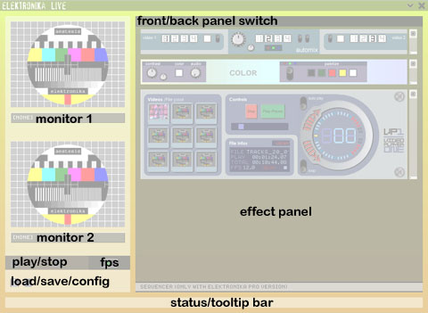
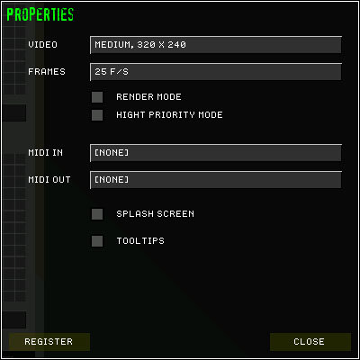
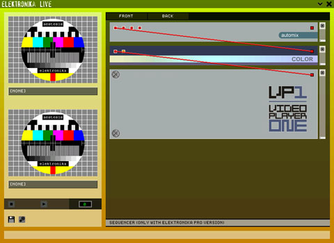
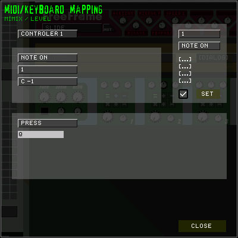

eleKtroniKa
help file
aestesis live video software
elektronika is
a video software for VJs and live visual performer.
it can be used realtime when DJs playing,
or integrated using midi into live audio/video set.
you can also link
elektronika to any external midi sequencer, and create
midi control loops for elektronika into the sequencer that's you just
switch on/off during the show (like an audio live).
general view

monitor 01 and monitor 02, used for preview one the internal video or audio stream
start/stop, switch on/off elektronika render stream (you can use also the space key)
save/config, display the load/save menu or the config dialog
status/tooltips bar, display alerts, errors or info about the button under the mouse pointer.
effects panel, the effects modules are displayed here, you can switch front/back using the tab key, up/down using the mouse wheel, create or delete effect using the context menu (right click mouse).
config dialog

video, select
the video stream size.
frames, select the
frame rates of the video stream.
render mode, desynchronize
from real time (used for AVI render)
hight priority mode,
set the priority of the video stream thread (use all the power of the computer
to have the desired frame/rate).
midi in, select the
midi in device
midi out, select the
midi out device
splash screen, switch
on/off the splash screen.
tooltips, activate
the tooltips.
register, open the register info dialog box.
back view

on the back view you
can plug together the effects with virtual video or audio cable.
for this, just click on a pin and drag the link on the desired linked pin.

you can have infinite number of cables plug onto an out pin.

context menu
elektronika use
context menu to manage creation and deletion of effect.
display about dialog box, change interface background, and display
the mapping dialog box (keyboard/midi).
mapping dialog box
to display this
dialog, just right click on a effect button and select mapping.
to use midi, you must select before a midi-in device in the config/properties
dialog box.

the dialog is cut
in three part, on the top right this is the midi sniffer,
on the top left, the assigned midi event.
and on the bottom part the keyboard assignation.
midi mapping
the midi sniffer display
all midi input events.
you can filter this event by setting the two filters: channel and event type.
pressing the set button wil assign the current event on the edited knob.
you can also edit the desired event by using the list in the assign part.
some elektronika interface
button need more than one event to be midi controlled,
just select the other controller by select it in the list that display "controller
1".
keyboard mapping
select the type of
keyboard control:
"press" or "switch" to control knob on/off or press on
control.
"select" or "cycle" to control pattern switch or same
type controls.
after just move on the key event, and type the desired key on your keyboard.
interface controls
color button
left click on it and
use :
>> up/down for luminosity
>> left/right for hue (color choice)
>> ctrl up/down for saturation
or double click and pick a color anywhere on the desktop background.
copyright aestesis
2003
www.aestesis.org